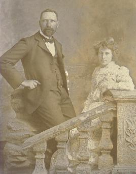

|
Maria Magdalena Daisy Henning (gebore Beeton) * 5-1-1877, vrou van b7.c8.d8. Olivier Johannes Henning en haar kinders. Voor v.l.n.r.: Daphne (getroud Harker) * 7-4-1918, Mona (getroud Twigg) * 18-8-1910, Dina Margaretha Jacoba (gebore Greyling) v/v Stanley (e1), moeder Daisy, Enid (getroud Jacobs) * 18-6-1906, Gladys (getroud Truter) * 26-6-1913 en Rubina Theunissa (gebore Naude) v/v Vincent (e5). Agter v.l.n.r: Stanley * 26-1-1904, Leonard * 24-7-1908 en sy vrou Jannetta Sophia H S (gebore Kruger), Barend Jacobus Jacobs *17-6-1896 (M/v Enid), Vincent * 12-9-1911
Beskou lys van mense op foto
|
 |
b7.c8.d8. Olivier Johannes Henning * 11-9-1869 en sy eggenote Magdalena Maria Daisy (gebore Beeton) * 5-1-1877
Beskou lys van mense op foto